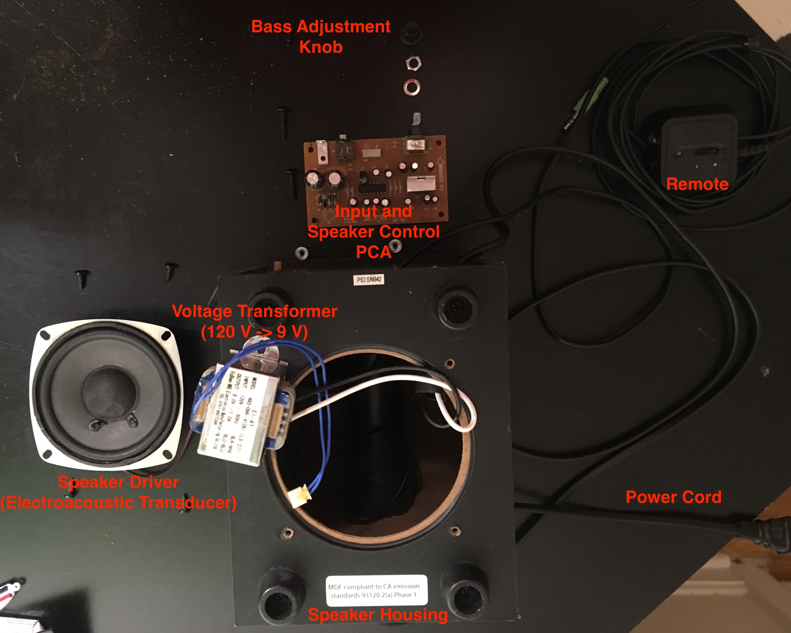
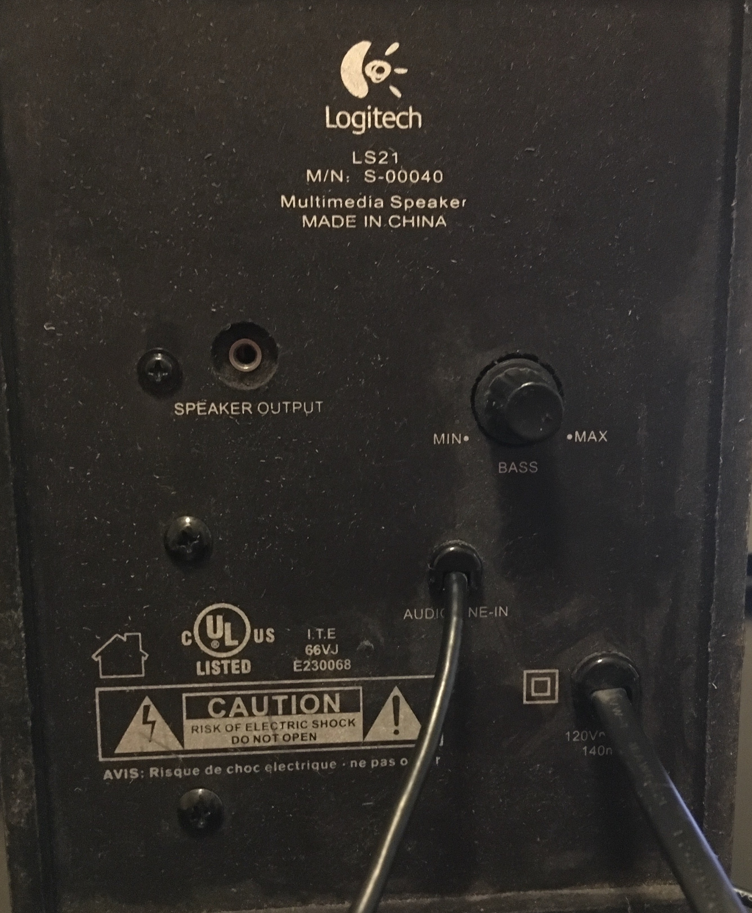
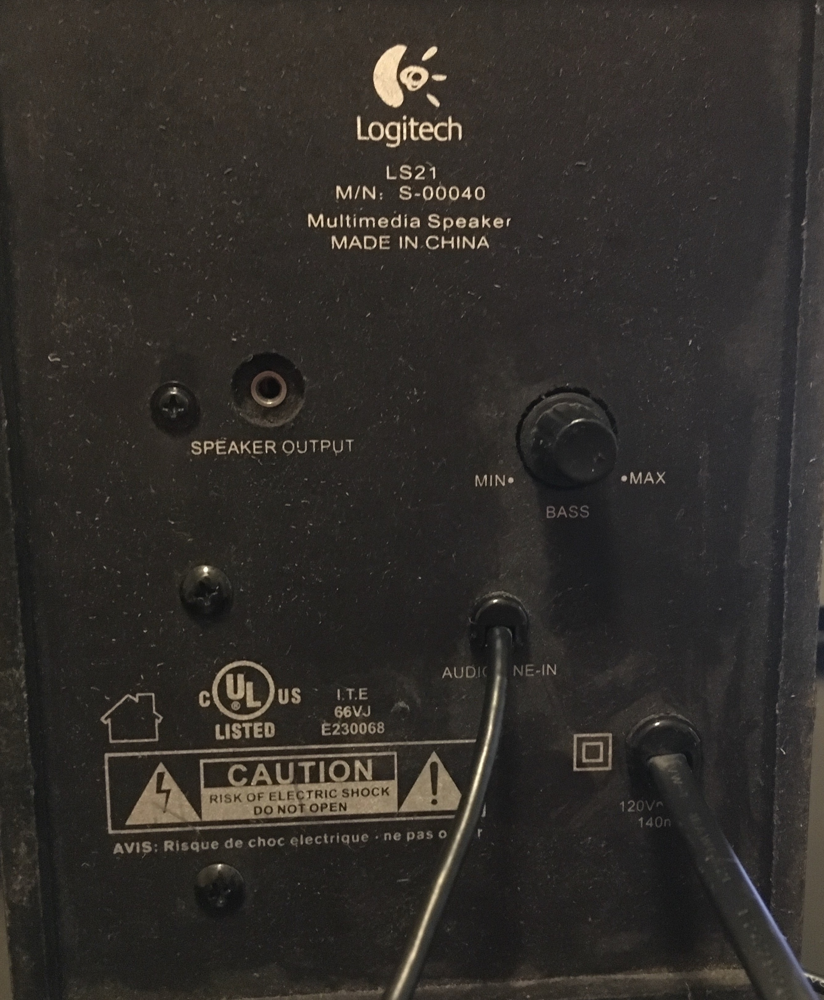
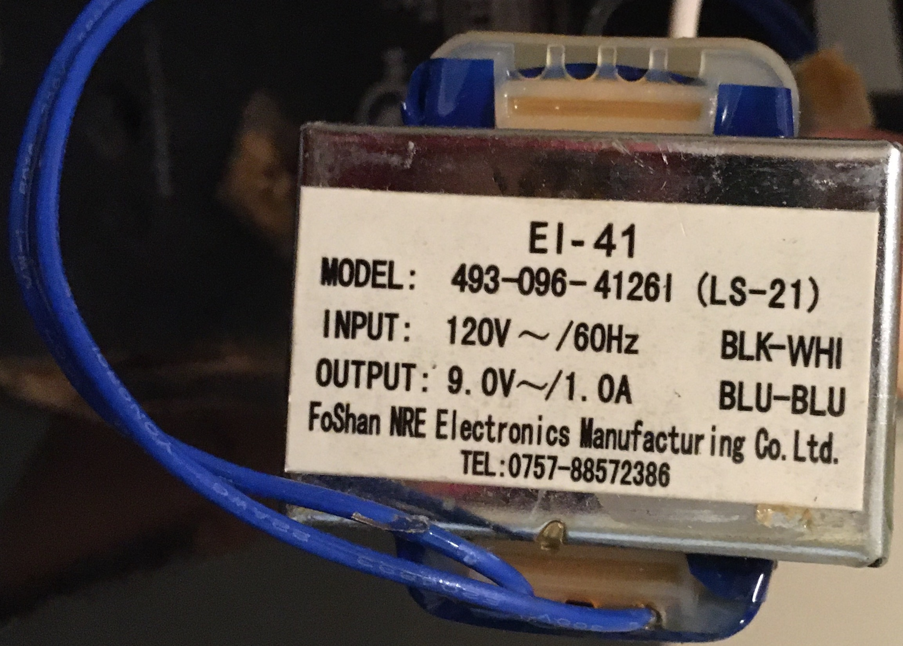

Introduction
My grandma taught me the importance of resource utilization. She taught me that almost every piece of junk thrown out on the street has the potential to serve a purpose for you and your projects. So when I bumped into the Logitech LS-21 Subwoofer Speaker sitting lonely on the edge of a curb in Medford, Massachussetts, I took it back home with me and eviscerated it.
Labelled Exploded View of Subwoofer Speaker
I wasn't able to get the subwoofer speaker to work before I disassembled it, which is likely why it was rejected to the street to begin with. The speaker was difficult to disassemble and required some destructive processes to be fully opened. It's probable the speaker was intentionally designed to be so difficult to open to protect people from accidentally electrocuting themselves as is mentioned in the warning on the back. Not only is this a concern when the speaker is plugged in, it remains a concern when the speaker is unplugged as the capacitors continue to carry charge.
 

Front (on left) and Back (on right) Views of the Subwoofer Speaker
Electronics
The subwoofer speaker was mainly an electrical product with not much exciting happening mechanically. Examining the label on the voltage transformer, the EI-41 voltage transformer converts 120 V AC current from the wall outlet (black and white wires at the top of the picture) to 9 V AC current to be used in the printed circuit assembly (PCA) circuit (pair of blue wires at the bottom of the picture).
Close-up of Voltage Transformer
Examining the PCA, it can be seen in the bottom left corner that this amplifier PCB is the 10th revision of its kind for the LS-21 speaker set and its design was completed on June 17th, 2009. The contents of the PCA include the following:
- 15 Capacitors of Varying Capacitance
- 4 Diodes Acting as a Rectifier
- 2 Integrated Circuits
(one with a Heat Fin Assembly) - 9 Jumpers for PCB Configuration
- 1 Jack Connector
- 1 Potentiometer
- 2 Pin Headers (1x2)
- 1 Pin Connection (1x5)
Labelled Close-up of Input and Speaker Control PCA